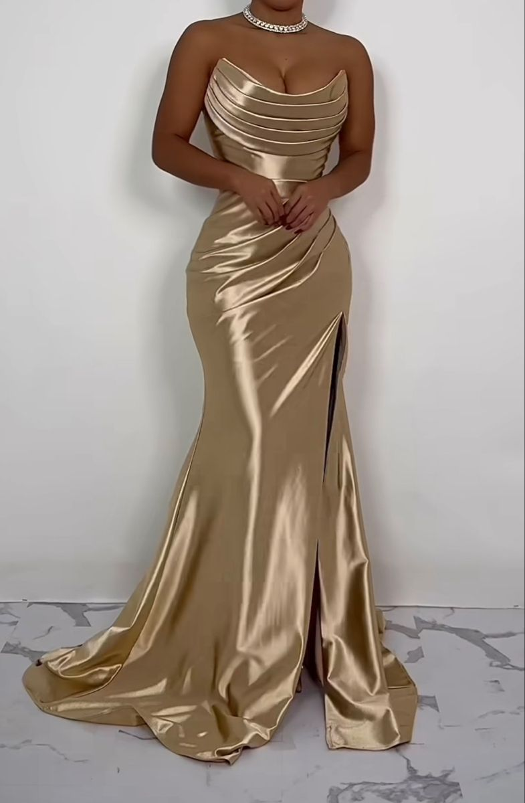
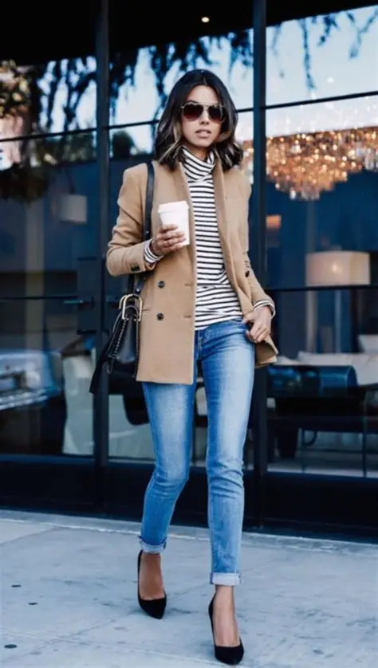
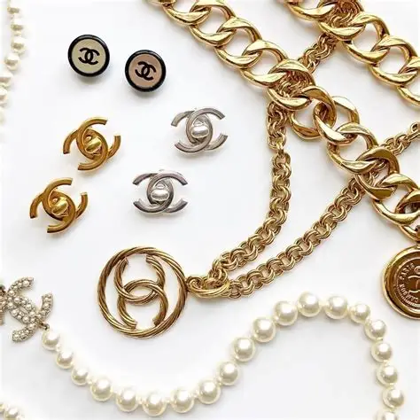

Fashion is more than just clothing. It is a form of self-expression, confidence, and creativity. On this website, I share my passion for different fashion styles including elegant dresses, comfortable casual outfits, and stylish accessories. Each section explores how fashion can reflect personality and mood while also being practical for everyday life.
Whether you are dressing for a formal event, school, or simply looking to upgrade your everyday look, fashion allows you to show who you are without saying a word. This website demonstrates my understanding of styling, colour coordination, and outfit inspiration.
Helpful Fashion Resources:
Vogue | Zara | Harper's BazaarElegant and classy dresses perfect for formal events and special occasions.

Comfortable, stylish everyday outfits that balance fashion and practicality.

Accessories that complete your outfit and elevate your personal style.
